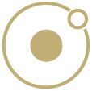

Mindful Path
App Design | UX / UI Design | Prototyping
Im Rahmen meiner Weiterbildung im Modul AppDesign habe ich einen Prototypen einer ToDo-App entwickelt, die vor allem ein Augenmerk auf eine ausgeglichene Tagesstruktur hat.
Hierfür nutzte ich Tools aus dem UX & UI Design (Strategische Ziele, Umfang, Struktur, Layout/Inhalt, Visuelle Gestaltung) und erarbeitet in Figma einen vorläufigen Prototypen.
"First things first"
Die Zielgruppenanalyse
Mit der Idee, eine Todo App aufzubauen, stellte ich mir die Frage, welchen Nutzen kann es denn für Menschen bieten? Wie kann sich das Produkt von den weiteren Todo Apps, die auf dem Markt kursieren, abheben? Und für wen sollte diese App überhaupt sein?
"Bit by bit"
Die Zielgruppe:
Alle erwachsenen Personen, die ihre Aufgaben strukturieren und ihre Tages/Wochenstrukturierung optimieren wollen, da sie das Gefühl haben das etwas unausgeglichen ist in ihrem Leben (fühlen sich gestresst, unglücklich, etc.)
Die Zielsetzung:
Diese App soll den Nutzenden mit Tools wie Wochenanalyse, Stimmungstagebuch und Meditationsübungen unterstützen, ihre Tages-/Wochenstrukturierung zu optimieren und vorallem eine ausgeglicheneren individuellen Weg für sich zu entwickeln.
Daraufhin entwickelte ich eine Persona, um die Bedürfnisse zu konkretisieren und die Hauptkriterien für die App herauszuarbeiten.
Bild von vectorjuice auf Freepik
Vereinfachte Ansicht der Seitenstrukturierung
Strukturierung & Aufbau
Ziel einer ansprechenden UX ist es, Benutzende möglichst nahtlos an das Nutzungsziel zu bringen.
Dazu sind folgende Faktoren vorab zu überlegen und auf die Bedürfnisse zuzuschneiden:
- Content (z. B. zielgruppenorientierte Texte und Bildmaterial)
- Animationen (z. B. Übergänge oder Microanimations)
- Informationsarchitektur (Seitenaufbau, Navigation, Module/Kategorien)
- Usability (z. B. generelle Nutzerfreundlichkeit und intuitive Bedienung)
"Look & Feel"
Die visuelle Gestaltung & Atomic Design
Die visuelle Wirkung hat im Design-Prozess des UI oberste Priorität. Dazu gehören die Farben, Formen, Schriftarten, Icons oder auch die Gestaltung interaktiver Bestandteile, wie Buttons, Eingabefelder, Schieberegler, Slider und mehr. Nach der Zielgruppenanalyse war für mich wichtig, dass das Design ruhig, modern und aufgeräumt wirken soll, um einerseits eine gute Nutzerführung zu gewährleisten und andererseits in dem Nutzendem ruhige und ausgeglichene Emotionen hervorzurufen. Im Folgenden stelle ich Ausschnitte der visuellen Gestaltung vor. Ich habe hierfür das Atomic Design genutzt, um eine Konsistenz in meinem Projekt zu erschaffen.
Color
Farben sind nicht nur Zahlen im RGB - Farbraum, sondern lassen uns auch Emotionen spüren, oder lösen diese in uns aus. So kann ein Grün Ruhe, Gelassenheit und ein Gefühl von Sicherheit versprühen, wobei ein Rot für Gefahr steht und somit die Aufmerksamkeit erhöht.
Auf Grundlage der Farbpsychologie habe ich mich daher für blau-grüne Töne entschieden, um beim Nutzendem Vertrauen, Ruhe, Gelassenheit, Harmonie und ein entspannendes Gefühl auszulösen, sobald er die App öffnet.
Zudem habe ich eine Signalfarbe in Rot gewählt, welches die Komplementärfarbe zu den gewählten blau-grün Tönen darstellt. Diese ist sparsam eingesetzt und nur für Fehlermeldungen, oder wichtige Hinweise zu nutzen.
Typografie
Segoe UI
Schriftarten unterliegen, wie Farben, einer bestimmten Charakterisierung. Daher habe ich mich hier bewusst in dem Projekt für eine serifenlose Schrift entschieden, der moderne, klare und auch freundliche Aspekte zugeschrieben werden.
Zudem ist eine gute Lesbarkeit auf jedem Device gegeben.
Auch zahlreiche Schriftschnitte, und somit eine große Freiheit Bereiche anders zu gestalten, ohne dabei auf eine andere Schriftart zurückgreifen zu müssen, ist ein wichtiger Punkt in der Auswahl der gegeigneten Schriftart. Da dies eine einheitliche Darstellung im Design unterstützt und somit ein rundes Erscheinungsbild abbildet.
Interactions

Interaktionen sind der Verbund aus einzelnen Atomen (Molekül) und ermöglichen eine Wiederverwertbarkeit von Eingabefeldern, oder anderen Interaktionen wie Buttons.
Für eine bessere Darstellung, habe ich ein paar ausgewählte Interaktionen als Video eingebunden.
Prototyp
Du bist neugierig geworden und möchtest dir einen eigenen Eindruck von meinem Prototypen machen?
Dann sende mir eine E-Mail mit einer kurzen Nachricht.
Nach meiner Freischaltung kannst du über den Button unterhalb zu meinem Projekt gelangen.